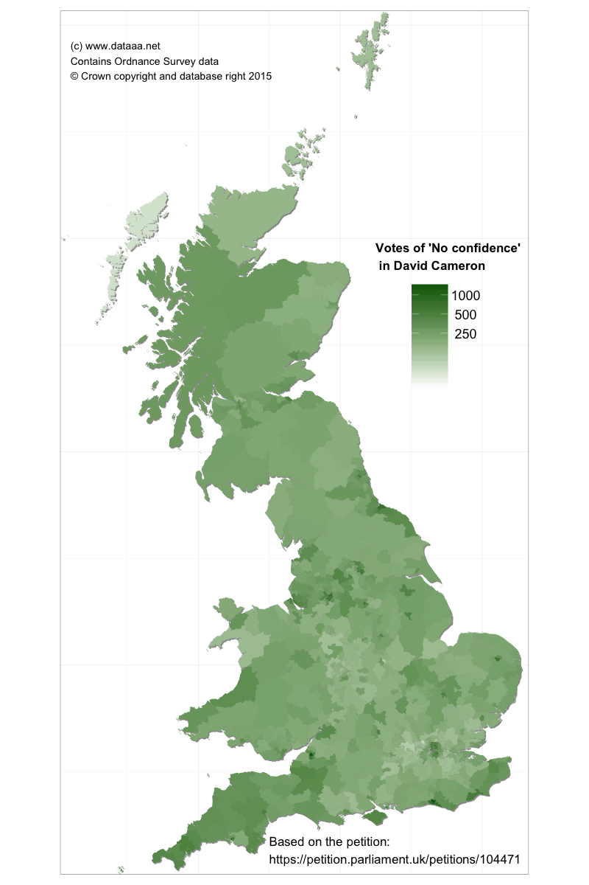

Cameron, we don't believe you
It has only been six months since the last General Election in the UK, but already a proportion of the UK population are losing faith in their Prime Minister, David Cameron. The ruling Conservative party have been coming under fire in the media after broken election promises, post-election U-turns and their aggressive pro-austerity policies. I recently noted a petition, asking the House of Commons to debate having a vote of 'no confidence' in David Cameron. At the time of writing, it has amassed nearly 170,000 signatories, and that list seems to be growing at a rate of thousands per day. And there are still two months left to run. 170,000 votes is nothing compared to the turnout for the General Election 2015 (some 45 million people), but it will be interesting to see how many votes this government petition will result in. At 100,000 signatories, the government must consider any petition seriously, possibly even tabling it for debate within the House of Commons. So this action will clearly get some attention.

The most disillusioned constituency (not shown on this map, since it is a clear outlier) is, ironically, the City of Westminster, with nearly 6,500 votes of 'No confidence'. It is not clear, however, how many addresses entered onto the petition are genuine. Other areas of the country with visible lack of confidence in the Prime Minister are Teeside, the West Country and the South-West, the west Wales coast, the Highlands of Scotland and the northern industrial cities of Manchester, Liverpool, Blackpool and Preston.